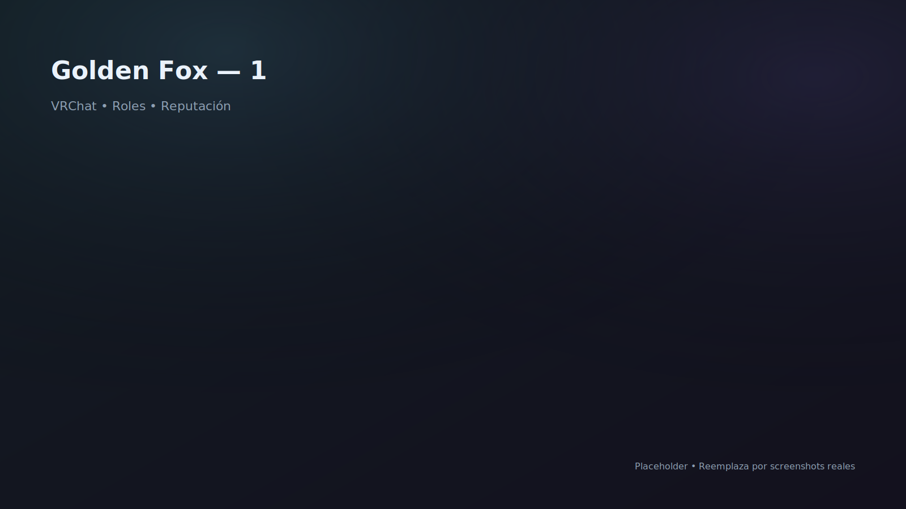

Proyecto VRChat
Gala / Dance Events
Legacy · SDK2 · 2020
FBT Golden Fox
Salón de gala para eventos de baile, con identidad visual de , y . Proyecto histórico (SDK2) donde implementé mis primeros sistemas complejos: (no remoto; definido por build), y los primeros pasos del sistema de .

Aportes y responsabilidades
- Diseño de salón de gala orientado a eventos: circulación, pista y puntos focales.
- Primer sistema de roles (no remoto): permisos definidos por build/versión.
- Primer amplificador: prototipo para reforzar audio/ambiente en el venue.
- Inicio del sistema de teleport (UX básico) y utilidades para eventos.
- Implementación bajo restricciones de SDK2, priorizando estabilidad.
Notas / enlaces
Sistemas y código desarrollados
Introducido aquí:
Sistema de roles v1 (build-time)
Permisos/roles integrados al build (antes de la versión remota por URL/JSON).
Amplificador v1
Prototipo inicial para reforzar audio/ambiente durante eventos.
Teleport v1 (early)
Primeras iteraciones de UX y puntos de movimiento para eventos.
Venue design para baile
Pista, puntos focales y layout pensado para convivencia y performance.
Pipeline SDK2 (legacy)
Trabajo bajo limitaciones de la época, con foco en estabilidad.
Identidad visual premium
Rojo/negro/dorado como lenguaje de “gala” y alta presencia visual.